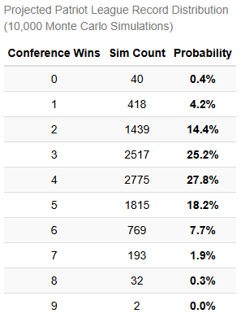
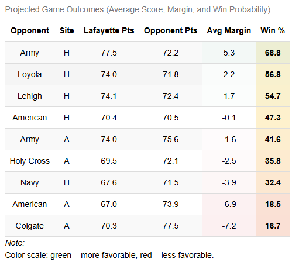
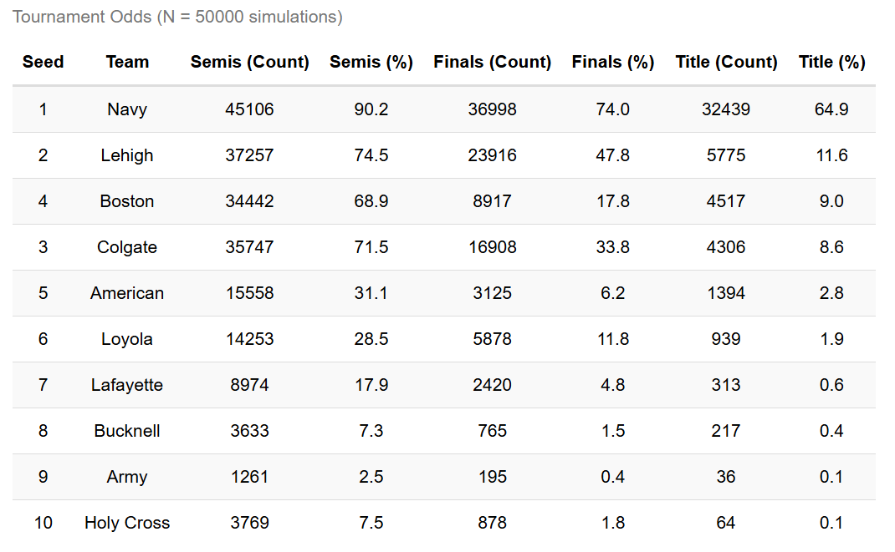
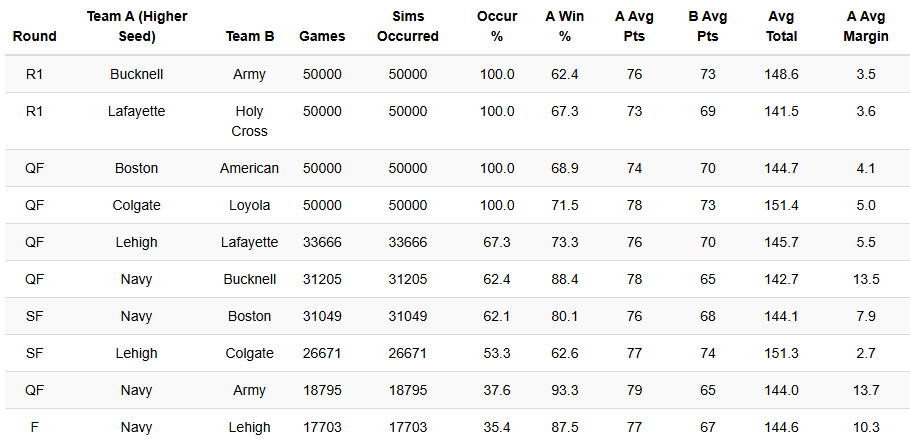
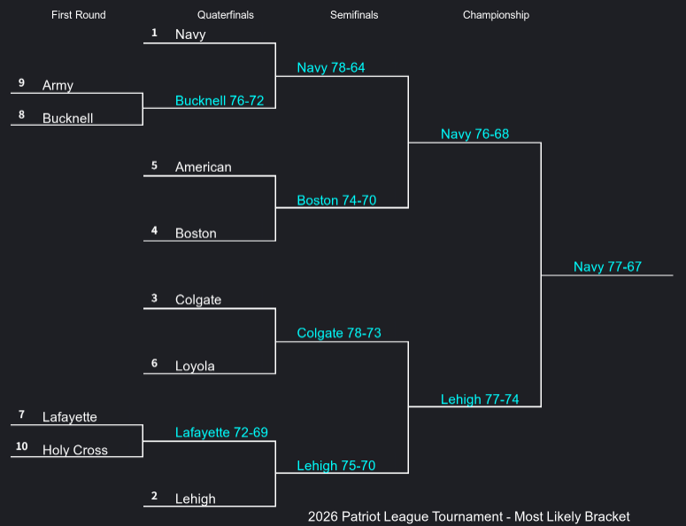
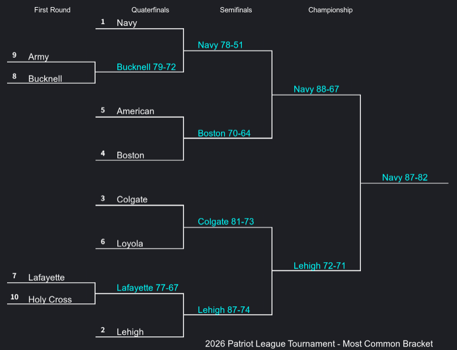
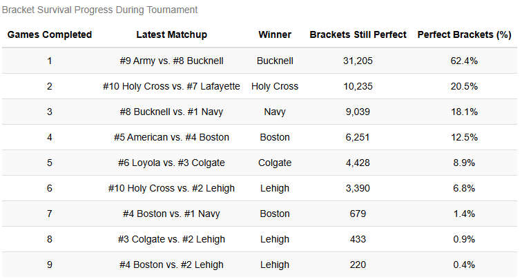

Probabilities were more informative than point predictions
Reporting a range of possible win totals communicated uncertainty more effectively than assigning each team a single projected record.
Sports Analytics • Monte Carlo Simulation
Iterative regular-season projections and conference tournament simulations developed to quantify likely outcomes as new results became available.
This project used Monte Carlo simulation to forecast the Patriot League men's basketball season in two phases. During conference play, the model was rerun at regular intervals to estimate the likely outcomes of each team's remaining schedule. After the regular season concluded, a separate simulation modeled the conference tournament and estimated each team's probability of advancing through every round.
Rather than predicting a single final record or tournament bracket, the simulation generated distributions of possible outcomes. This made it possible to communicate both the most likely results and the uncertainty surrounding them.
Before conference play began, I collected box score data from every Patriot League team's non-conference games. These results were used to estimate each team's typical pace, offensive efficiency, defensive efficiency, and game-to-game variability.
Those estimates became the inputs for a simulation framework that generated possible scores for every remaining conference matchup. The regular-season model was updated after each team had completed the same number of conference games. Once the conference tournament bracket was finalized, the same general framework was adapted to estimate complete tournament brackets.
Given the results available at a particular point in the season, how many of its remaining games was each team most likely to win, and which individual matchups were most likely to shape its final conference record?
Based on the completed regular season and simulated matchup outcomes, how likely was each Patriot League team to reach the semifinals, advance to the championship game, and win the conference tournament?
The model was initially built from manually collected box score data covering every Patriot League team's non-conference schedule. Each game represented an observation of a team's performance and playing style before conference competition began.
For every game, I recorded:
The raw box score statistics were then used to estimate possessions, offensive rating, and defensive rating.
POS = FGA + 0.44 x FTA - ORB + TOV
Possessions provided an estimate of each team's typical pace
OFF Rtg = (PTS ÷ POS) × 100
Offensive rating represented points scored per 100 estimated possessions.
DEF Rtg = (PTS Allowed ÷ POS) × 100
Defensive rating represented points allowed per 100 estimated possessions.
For each team, I calculated the mean and standard deviation of possessions, offensive rating, and defensive rating across its non-conference games. These summary statistics formed the distributions used in the simulation.
Team performance was treated as a variable rather than fixed. For each simulated game, values for possessions, offensive rating, and defensive rating were drawn from normal distributions.
The mean and standard deviation of each distribution matched the corresponding statistics calculated from the team's observed non-conference games. This allowed the model to represent both a team's typical level of performance and its natural game-to-game variation.
Calculate each team's mean and standard deviation for pace, offensive rating, and defensive rating.
Draw a simulated possessions value, offensive rating, and defensive rating for each team from its corresponding normal distributions.
Combine the simulated pace and efficiency values to estimate the number of points each team would score and allow.
Simulate each potential conference game thousands of times and aggregate the results into estimated win probabilities.
Every potential conference matchup was simulated 10,000 times. The resulting game-level probabilities were then used to simulate each team's remaining conference schedule.
The full conference simulation was rerun after every team had completed the same number of games. For example, one update was produced after every team had played its first conference game, another after every had played its second game, and so on.
Completed games were treated as known results, while all remaining games were simulated. This created a sequence of updated forecasts as the season progressed.
After the regular season concluded, the finalized tournament bracket was simulated 50,000 times. Each simulation generated a complete tournament path, with winners advancing through the bracket until a confernece champion was selected.
Increasing the simulation count provided more stable estimates for less common bracket combinations and lower-probability championship outcomes.
The iterative model displayed the probability that each team would win every possible number of games remaining on its schedule. This provided a distribution of potential outcomes rather than reducing the forecast to a single projected final record.

A second table summarized the estimated outcome of each remaining matchup. This made it possible to identify games with a clear favorite as well as games whose simulated outcomes were more evenly divided.

Once the regular season ended, the project shifted from simulating a fixed schedule to simulating a conditional tournament bracket. The result of each round determined the possible matchups in the next, allowing the model to estimate advancement probabilities and common tournament paths.
The primary tournament output summarized each team's probability of reaching the semifinals, advancing to the championship game, and winning the Patriot League tournament.

Because later-round matchups depended on the results of earlier games, not every pairing occurred with the same frequency. This table recorded every matchup generated during the simulations and ranked them by how often they appeared.

Two different bracket summaries were generated from the simulations. The most likely bracket selected the favored team in each projected matchup, while the most common bracket represented the complete bracket that appeared most frequently across all simulations.
These brackets were not necessarily identical. A collection of the most likely individual outcomes does not always produce the most frequently occurring complete tournament path.


After the conference tournament concluded, I compared the actual results with the simulated brackets. The final evaluation table tracked how many simulated brackets had correctly reproduced the observed tournament results.
This comparison was not intended to judge the model solely by whether it predicted one exact bracket. The simulation was designed to represent a range of possible outcomes, including both common and low-probability tournament paths.

The regular-season simulation provided an updated view of the conference after each common checkpoint in the schedule. Instead of relying only on current standings, the model estimated the distribution of each team's possible remaining wins and highlighted the matchups most likely to affect its final record.
The tournament simulation extended the same probabilistic approach to a bracket in which each result altered the set of possible future matchups. The outputs summarized advancement odds, likely opponent combinations, common bracket paths, and championship probabilities.
Comparing the simulation with the actual tournament also provided a retrospective view of how plausible the observed outcome had appeared before the tournament began.
Reporting a range of possible win totals communicated uncertainty more effectively than assigning each team a single projected record.
Rerunning the model at common schedule checkpoints showed how actual results changed the distribution of possible conference outcomes.
Teams' advancement probabilities reflected not only their own projected strength, but also the likelihood of facing particular opponents in later rounds.
Comparing the most likely and most common brackets demonstrated the difference between evaluating games and evaluating complete tournament paths.
The simulation relied on several simplifying assumptions that should be considered when interpreting its results.
This project strengthened my understanding of how simulations can be used to communicate uncertainty in sports forecasting. Rather than asking the model to identify one definitive outcome, I used repeated simulations to describe the range and relative likelihood of possible results.
Building the model in stages also demonstrated the importance of creating a repeatable analytical pipeline. The regular-season code had to incorporate completed results, update the remaining schedule, rerun thousands of simulated seasons, and produce interpretable outputs at several points during conference play.
The tournament portion introduced an additional challenge because future matchups were conditional on earlier results. Simulating full brackets required the code to update the tournament structure after each round and aggregate advancement probabilities across many possible paths.
A future version of the model could update team distributions throughout conference play, incorporate opponent-adjusted efficiency, model correlations between pace and performance, and include player availability or lineup information.